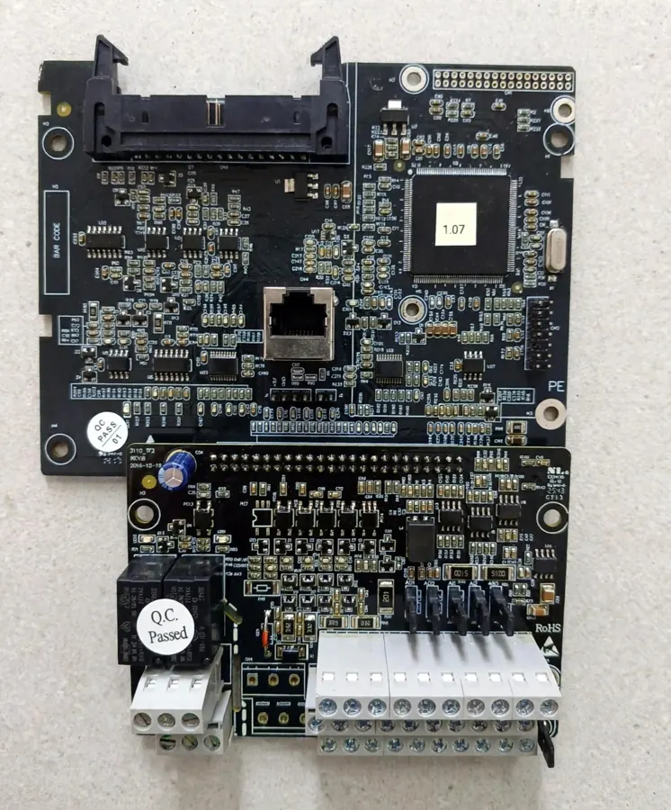

Main CPU and I/O control board for INVT Goodrive300A (GD300A) series inverters — RJ45 port and removable pluggable wiring terminals.
This is the main CPU and I/O control board for the INVT Goodrive300A (GD300A) series inverters. This board handles the VFD’s core processing, motor control logic, and communication with external devices. It features an RJ45 port and removable pluggable wiring terminals, making it ideal for industrial automation systems and for repairing or replacing faulty VFD units.
Price: Price on WhatsApp — contact us for the current rate.
Ask Price on WhatsApp View in IGBT House Store| Brand | INVT |
| Series | Goodrive |
| Model compatibility | GD300A |
| Component type | Main control motherboard / I/O terminal board |
| Firmware / software version | 1.07 (labeled on the main processing IC) |
| Communication interface | RJ45 port (for external keypad and RS-485 Modbus communication) |
| Control terminals | Pluggable screw terminal blocks (for digital inputs, analog inputs/outputs, and relay connections) |
| Quality assurance | Includes a "Q.C. Passed" sticker, ensuring the hardware is tested and verified. |
| Application | Industrial motor speed control, VFD repairing, and automation control panels. |
| Stock | Confirmed on inquiry |